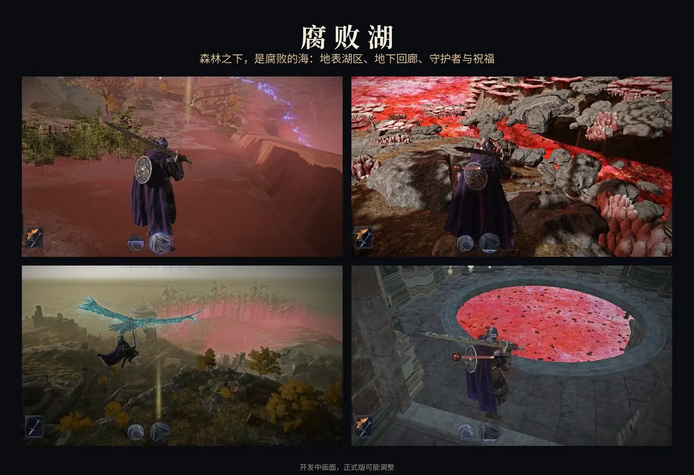
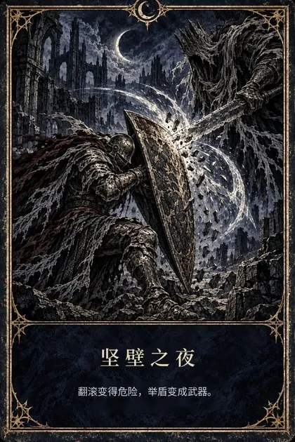
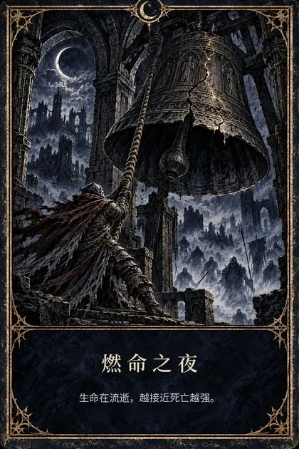
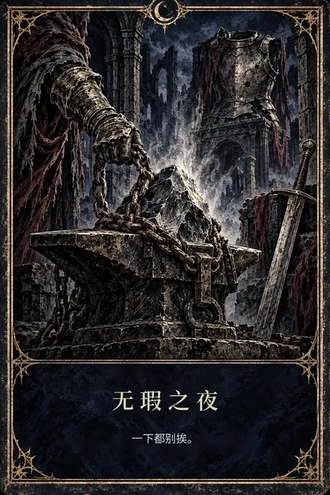
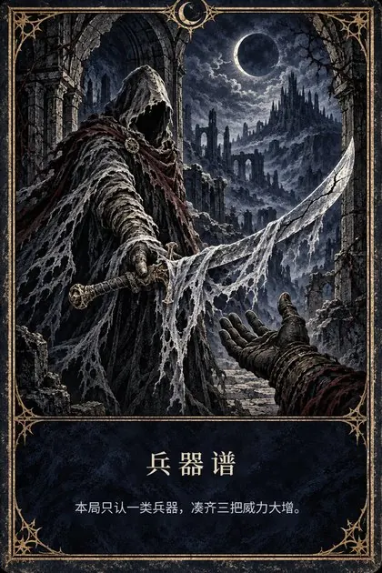
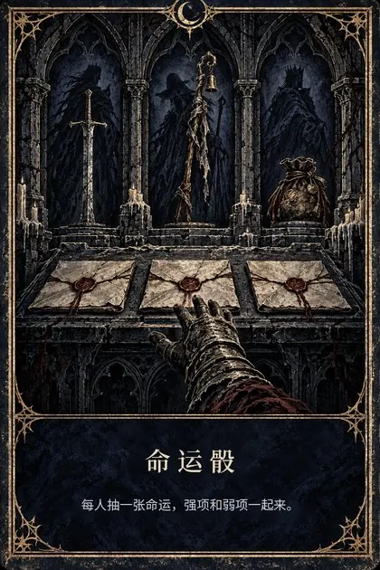
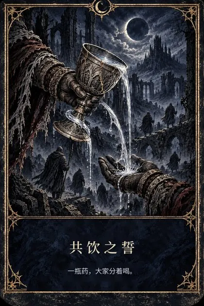

×00
玩家反响 · 数据截至 2026.11.09
内容规模
01
同一位夜王的两次挑战，前两天遭遇的敌人可以不同。
新增 7 位夜王：火焰巨人、贝勒、龙王、拉塔恩、玛利喀斯、玛莲妮亚、梅瑟莫。每位配置 2 套“前两夜 Boss + 小怪”的随机组合；原版野外 Boss 调整为终局 Boss，并重新设定血量、二阶段与多人缩放，支持 1–3 人挑战。
每位夜王均配有专属图标、战斗音乐、天空氛围与第三天决战场景，演出规格与原版保持一致。普通远征可直接选择，深夜模式中也会随机遇到。
腐败湖替换森林所在的区域，分为地上、地下两层。地上分三个区域随机投放共鸣结晶，共 64 种组合，全部击碎后封印解除，传送门才会开启，通往地下回廊；两层之间以传送门连接，减少无效跑图。全图共布置 152 个敌人与 44 个宝物点，地下最深处设有守护者与祝福。
特异地形占用原版森林的位置：引擎抽到湖区方案时，原生插件在开局前把这一局的森林地形文件换成湖区，其他局保持森林。普通远征与深夜模式都可能出现，概率约 5%，与其他特异地形相当。

02
原版中救援仅起止损作用。新增的互救增益为被救者提供反打动机，也提高了救援行为本身的收益。
重做 30 个护符的成长曲线与三档掉落，使第一天获得的护符在第三天仍具备取舍价值。玩家被队友救起后，攻击力逐步提升。
开发期间共进行 80 余轮实机测试，主要工作量集中在闪退排查。所有问题均定位至根因后修复，未以删减内容的方式规避。
03
夜律是“每局一条”的规则卡，作用于路线、资源用途、行动时机与队伍配合，每条都有收益，也有代价，不额外提高敌人强度。12 条已全部实装并随测试版公开，按 1、2、3 人分档设定数值。






| 夜律 | 收益 | 代价 |
|---|---|---|
| 坚壁之夜 | 防御反击附带圣光冲击，成功防御回复生命，开局送小盾 | 翻滚后短时间内承受伤害提高 |
| 疫病契约 | 攻击附带本局异常，对已中异常的敌人伤害 +15% | 自己挨打也积累同一种异常 |
| 燃命之夜 | 血量低于 40% 时攻击 +30%，打倒敌人回复生命 | 生命持续流失，圣杯瓶回复 −30% |
| 无瑕之夜 | 满血时攻击 +15% | 不满血时攻击 −15%、承伤 +10% |
| 征伐令 | 击败各类据点首领，永久提升对应属性 | 本局基础攻击力降低 |
| 寻宝之夜 | 地图显示隐藏宝藏，物品发现力提升 | 打倒敌人获得的卢恩减少 |
| 贪婪之潮 | 卢恩获取 +30% 至 +40% | 每次濒死倒地，本局血量上限降低 |
| 兵器谱 | 本类兵器更易出现，凑齐 3 把攻击 +25% | 基础攻击 −10%，凑不齐就是纯亏 |
| 命运骰 | 每人抽一张命运：狂战、磐石、疾风、秘术 | 每张命运都带对应的弱项 |
| 共饮之誓 | 喝圣杯瓶同时治疗附近队友，道具效果共享 | 圣杯瓶对自己的回复 −30% |
| 并肩之夜 | 打倒敌人为附近队友回复，队友精力回复加快 | 身边没有队友时承伤 +15% |
| 行囊之夜 | 投掷壶、飞刀、辉石道具伤害 +50%，每天补给 | 武器攻击力 −10% |
12 条规则遵循四条设计原则：
04
深夜模式同样有夜律、新夜王和腐败湖，并且原版永夜之王与新夜王同时进入随机池。
游戏只用“基础夜王编号 + 是否永夜”来表示目标，没有第三种身份，所以新夜王只能借用永夜之王的位置。最初的版本因此把永夜之王挤出了深夜模式。
改版后同一个位置每局决定是谁：深夜抽取表加回 7 位原版永夜之王并沿用原版权重（深度 1 不出现，越深越常见）；抽到原版永夜之王时，原生插件把第三夜战场文件换回原版，并在内存中临时改回菜单的名字与图标。联机时，每台机器在落地后根据本局方案独立推导，结果一致。
深夜深度可以在配置文件中直接指定（1–5），玩家不必从深度 1 重新打起；深夜入口也不再依赖存档解锁。
05
测试版发布后 3 天内收到 6 类问题反馈，每一项都先查到根因再修，修复随 11.02 补丁与 11.03 完整版发布。
| 玩家反馈 | 根因 | 修复 |
|---|---|---|
| 联机时夜律只对房主生效 | 房主写入的联网状态无法同步到无缝联机的客户端 | 每台机器根据本局地图方案独立推导出同一条夜律，不再依赖网络同步 |
| 队友拿不到“打倒黑夜入侵者提升攻击力”的遗物效果 | 原版只在房主一端累加计数 | 改为每台机器各自记录入侵者死亡并累加 |
| 腐败湖第二夜后没有灵魂树，进不了第三天 | 湖区地图缺少灵魂树物件和通往决战场景的连接 | 在赐福旁补回灵魂树与传送连接 |
| 深夜模式重开后不见了；想直接从高深度开始 | 深夜入口依赖存档里的解锁标记 | 取消解锁条件，新增深度配置 |
| 新夜王的局里主城和野外 Boss 消失 | 地图扩展 Mod 把这些敌人挪进了变体 1–8，新夜王的方案从原版复制，变体仍是 0 | 按该 Mod 自己的分布重新分配 5215 行变体，其余数据逐表核对未变 |
| 深夜模式随机不到永夜之王 | 新夜王借用了永夜之王的位置 | 同一位置每局切换，原版永夜之王回到随机池 |
以上修复均已在单人环境实测；联机效果由测试玩家继续验证。